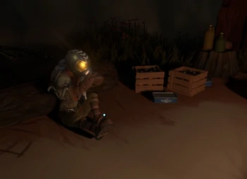

Trevelers da Outer Wilds Ventures

Chert
Chert é um astronauta Hearthiano localizado em seu acampamento no pólo norte de Ember Twin. Eles são encarregados de observar a galáxia e atualizar mapas estelares. Seu acampamento está cheio de equipamentos usados para astronomia. Eles tocam bateria. Chert é um astrônomo conhecedor e entusiasmado com seu trabalho. Eles são curiosos sobre os Nomai e o funcionamento do universo, e demonstram algum nível de devoção ao seu trabalho, comentando: “Às vezes acho que sou o único viajante aqui interessado em fazer qualquer ciência”. Quando falados no início do ciclo, eles parecem otimistas e animados por terem visto mais supernovas do que o normal. No entanto, quando falado mais tarde no loop, eles viram mais e mais estrelas morrerem, ficaram nervosos e depois entraram em pânico sobre o que isso pode significar para o seu próprio sol.

Esker
Esker é um dos primeiros astronautas Hearthian , e está localizado em seu posto avançado em The Attlerock. Eles costumavam administrar o Lunar Outpost quando era necessário para reparos frequentes de navios, mas agora eles apenas "ficam de olho nas coisas". Esker ocasionalmente atira em Little Scouts na vila em Timber Hearth. Eles rapidamente se tornam defensivos e envergonhados quando perguntados se eles usam seu Little Scout para espionar a vila, optando por se referir a ele como 'comunicação de mão única'. Esker está muito solitário em The Attlerock, pois eles não recebem mais visitantes, já que o programa espacial cresceu com mais sucesso e menos acidentes foram feitos. Eles pedem repetidamente ao personagem do jogador para ficar com eles perto do fogo. Eles também são os primeiros Hearthian viajantes do espaço a aparecer no epílogo.

Riebeck
Riebeck é um arqueólogo Hearthiano localizado na encruzilhada de Brittle Hollow . Eles tocam banjo. Riebeck é um Hearthian geralmente educado, mas tímido, que parece estar ansioso com a maioria das coisas, mas especialmente tudo que envolve viagens espaciais e espaciais. Eles se descrevem como “mais surpresos do que qualquer um [eles] aqui”, tendo chegado ao acampamento sob a crosta de Brittle Hollow literalmente caindo depois de tropeçar em um cristal de gravidade. Apesar do medo do espaço, Riebeck é um arqueólogo que é levado a explorar o sistema solar devido ao seu fascínio pela história, particularmente qualquer coisa relacionada aos Nomai. Quando se trata de suas paixões, eles podem ser extremamente entusiasmados, o suficiente para estarem dispostos a enfrentar seu medo do espaço se isso significar aprender mais sobre os Nomai.

Gabbro
Gabbro é um astronauta Hearthiano localizado em seu acampamento em uma ilha no Giant's Deep . Eles encontraram várias estátuas Nomai e trouxeram a estátua que o personagem do jogador emparelha para o observatório em Timber Hearth. Eles acidentalmente emparelham com um durante o mesmo loop que o personagem do jogador, o que significa que ambos experimentam os loops de tempo, mas só se lembram de começar no loop de tempo 9.318.054. Eles tocam flauta. Gabbro é amigável com o protagonista e exibe uma atitude muito casual e descontraída, embora com base em seus conhecimentos sobre mecânica quântica e suas reflexões sobre o loop temporal, eles parecem ser um astronauta competente e inteligente. De acordo com Spinel, “Gabbro pode ser um pouco fantasioso, claro, mas eles não são mentirosos. Quero dizer, provavelmente, de qualquer maneira.
